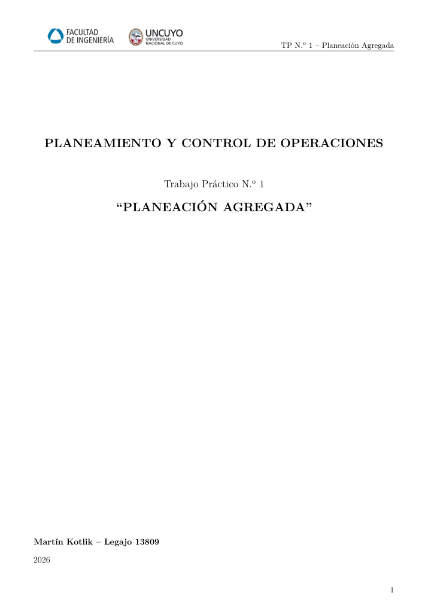

OPERATIONS OPTIMIZATION · UNCUYO · 2026
Aggregate Production Planning — Solver Optimization
Four-strategy comparison for a simulated 6,120-unit annual production plan. Solver minimized total modeled costs under workforce, overtime and inventory constraints.
Excel SolverPlanningCost Optimization

PROJECT OVERVIEW
Engineering approach & scope
Four-strategy comparison for a simulated 6,120-unit annual production plan. Solver minimized total modeled costs under workforce, overtime and inventory constraints.
Collaborative academic research project documented in the attached report. Results refer to the reported study, not independently verified industrial outcomes.